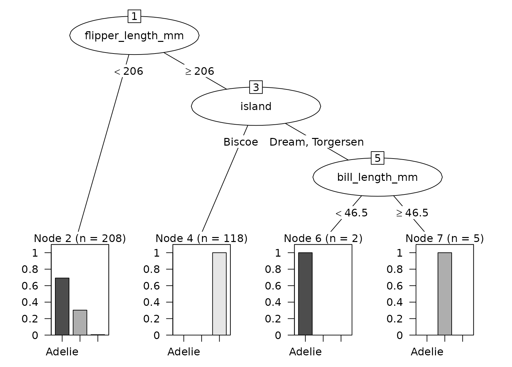

Convert a single tree from a C5.0 decision tree or boosted model to a party object for use with partykit visualization and analysis tools.
Usage
# S3 method for class 'C5.0'
as.party(obj, tree = 1L, data = NULL, ...)Arguments
- obj
A
C5.0object from the C50 package.- tree
Integer specifying which tree to convert (1-based indexing, default is 1). For single tree models, use
tree = 1. For boosted models withtrials > 1, this selects which boosting iteration to extract.- data
Data.frame containing the training data, including both predictors and response variable. Required for proper party object creation with fitted values and node summaries.
- ...
Not currently used.
Details
C5.0 tree storage format
The C50 package stores trees in a custom text format in obj$tree. This
format uses indented lines with key-value pairs:
type="2": Internal node with splittype="0": Terminal/leaf nodeatt="VariableName": Attribute/variable to split onforks="n": Number of branches (2+ for numeric, can be 4+ for categorical)cut="threshold": Numeric threshold for splitclass="ClassName": Predicted classfreq="n1,n2,n3": Frequency of each class at node
Boosting and trials
Single tree models (
trials = 1): Onlytree = 1is validBoosted models (
trials > 1): Multiple sequential trees availableThe
treeparameter maps to trial/iteration numberEach boosting trial produces one tree
Tree structure
Trees stored as sequential lines in pre-order (parent, then children)
No indentation used - hierarchy determined by fork counts
Numeric ternary splits: <= threshold, missing, > threshold
Categorical multiway splits: one branch per level group
Split encoding
Numeric splits: typically binary (<=, >) or ternary (<=, missing, >)
Ternary numeric splits are simplified to binary by omitting the missing branch
Categorical splits: can have 2+ branches, one for each level group
Multiway categorical splits are preserved in the party object
Examples
if (rlang::is_installed(c("C50", "palmerpenguins"))) {
data(penguins, package = "palmerpenguins")
penguins <- na.omit(penguins)
# Single tree model
set.seed(2847)
c5_tree <- C50::C5.0(species ~ ., data = penguins)
party_tree <- as.party(c5_tree, tree = 1L, data = penguins)
print(party_tree)
plot(party_tree)
# Boosted model with multiple trials
set.seed(5193)
c5_boost <- C50::C5.0(species ~ ., data = penguins, trials = 3)
# Extract first boosting iteration
party_tree1 <- as.party(c5_boost, tree = 1L, data = penguins)
# Extract third boosting iteration
party_tree3 <- as.party(c5_boost, tree = 3L, data = penguins)
}
#>
#> Model formula:
#> species ~ island + bill_length_mm + bill_depth_mm + flipper_length_mm +
#> body_mass_g + sex + year
#>
#> Fitted party:
#> [1] root
#> | [2] flipper_length_mm < 206: Adelie (n = 208, err = 30.8%)
#> | [3] flipper_length_mm >= 206
#> | | [4] island in Biscoe: Gentoo (n = 118, err = 0.0%)
#> | | [5] island in Dream, Torgersen
#> | | | [6] bill_length_mm < 46.5: Adelie (n = 2, err = 0.0%)
#> | | | [7] bill_length_mm >= 46.5: Chinstrap (n = 5, err = 0.0%)
#>
#> Number of inner nodes: 3
#> Number of terminal nodes: 4
